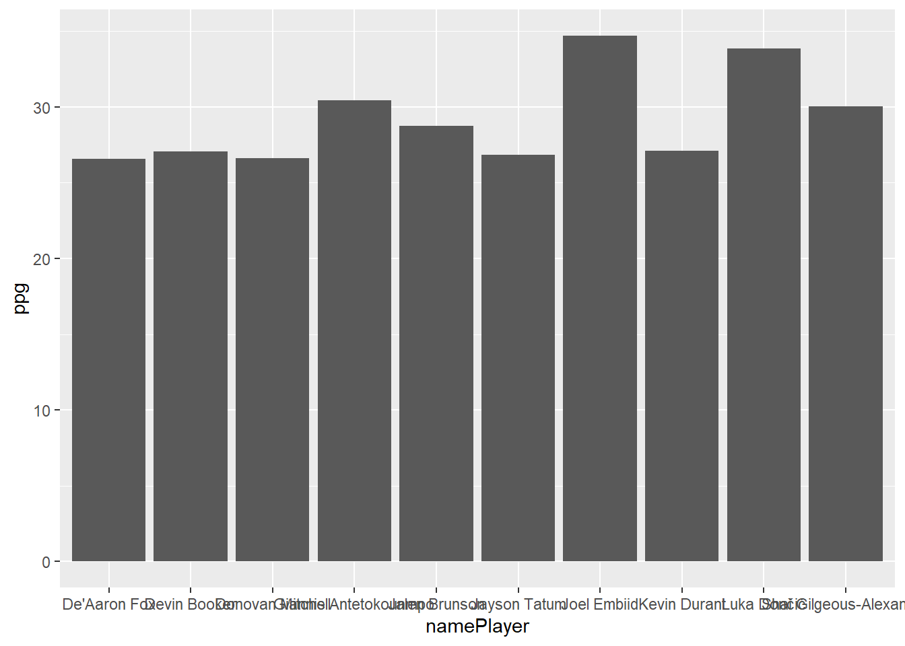

The below is a recreation and an update of the orginal HighCharter Cookbook by Tom Bishop available here: https://github.com/TMBish/MelbURN-highcharter
Overview of Highcharter
What is it?
highcharter is an R implementation of the highcharts javascript graphing API through R’s htmlwidgets. Most of the highcharts functionality is implemented through highcharter however the documentation is a little light. This guide will provide examples on how to create and customise various graphs whilst providing some tips on how to think about the package that will help you build and debug your more ambitious charts. I’ll try to show and explain (to the best of my knowledge) the most common graphs and customisation options I use in my day-to-day work. I assume you’re familiar with tidy data, dplyr, and R lists, as well as as simple understanding of the grammar of graphics (ggplot / aes()).
Highcharts is a commercial product so you can’t add these charts to a commercial product (selling to customers) without purchasing a licence but non commercial use (internal organisation / research) comes under their free license.
Your most important resources should be the highcharter official website, and the highcharts API documentation which you should bookmark in your browser:
Additionally get into styling your charts so a few extra resources you might want bookmarked:
As you become more a more proficient highcharter user and your charting requirements become more complicated you will need to understand more about the complexities of the highcharts API and you might need to learn, read and write a little javascript. This learning curve is actually the best thing about highcharter: most basic charts are as easy to create as ggplot, whilst complex and beautiful charts are still achievable with enough thought and tinkering.
Why and Why use it?
highcharter is a perfect compliment for ggplot2. Depending on your needs you it might not completely replace your use of that library, but it may. ggplot has a number of functional advantages over highcharter as it has simple implementations of reasonably complex chart types. I’d say I use highcharter for 90% of my day to day plots.
If you need to do any of the following or you’re a gun at making ggplots look presentable it’s I’d suggest using ggplot: * Semi-complicated facetting * Standard statistical layers / geoms like smooths and confidence intervals / error bars etc.
Getting the NBA data
I’ll be illustrating highcharter functionality with an NBA dataset I’ll get from the nbastatR package.
We’ll use the gamelogs (boxscores) from the most recent complete NBA season 2023-24:
Basic Charts
Tidy Data
Most (~90%) of your day-to-day charts can be probably written with 2-3 lines of code using the hchart and hcaes functions. These functions allow you to use the extremely powerful grammar of graphics to turn R data into interactive charts - functionality that isn’t implemented natively in R plotly for example. Like ggplot2 your data needs to be in tidy / long format so you’ll often need to use tidyr for some simple data pivotting before passing it to your highchart functions.
A simple ggplot of the top 10 scorers in the NBA this year might look like the following:
This chart, let’s be honest here, looks awful. Ggplot needs to do a better job of creating pleasing default charts and themes to entice beginners. Ggplot has also chosen to alphabetize the players on the x-axis even though I specifically ordered the dataframe in descending points per game order, a reasonbaly challenging workaround is needed for an R beginner. Highcharter, on the other hand, creates readable, nice looking default charts that can be presented naturally in a widely used publishing format (a html page).
Here’s the highcharter version of this plot which you’ll notice feels extremely similar to above:
…
References/Sources/Citations:
- Bishop, Tom. (2020). A cookbook for we based data visualisations with R + Highcharter on June 30, 2020. Available at: https://github.com/TMBish/MelbURN-highcharter (Accessed: 9 February 2025).